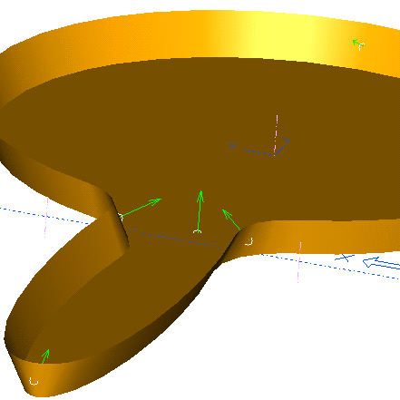
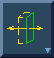
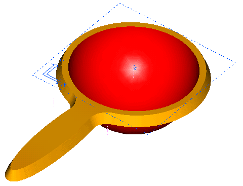

| Next Page | Previous Page | First Page |


Set the Material Side to inwards.
SIP on the top face of the part.

Create a line across the circle.

Ground the line Horizontally.

Make the line Coincident with the circle center.
 \
\


Revolve the 'D' Section, and set to Cutout.